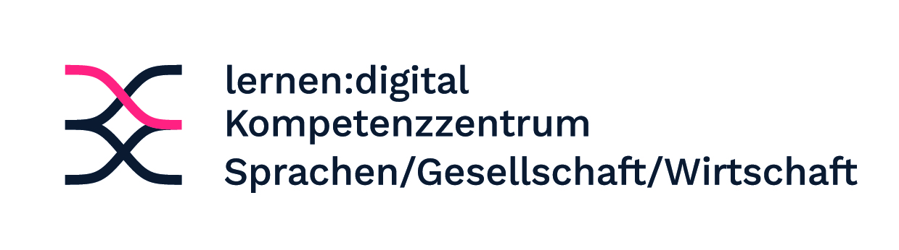

Jansen | Differentielle Psychologie im Kontext Schule
Forschungsvortrag | LMU München
Individuelle Unterschiede im schulischen Schreiben
Diagnostik von Schreibleistung und Schreibprozessen, Textbeurteilungen durch Lehrkräfte und individuelle Förderung mithilfe künstlicher Intelligenz.
Leitfrage
Wie funktioniert effektive und motivierende Schreibförderung für alle?
Ausgangslage
Schreiben ist zentrale Kompetenz, aber schwierig zu erwerben.
Schulisches Schreiben macht Fachverstehen, Argumentation, Sprache und Selbstregulation sichtbar.
Große Unterschiede in argumentativen Schreibleistungen
Naturwissenschaftliches Argumentieren: 4.589 Essays von 1.839 Schüler:innen. Schaller, Jansen et al., 2024
Fremdsprachliches Argumentieren: 2.314 argumentative Essays. Keller, Jansen et al., 2024
Feedback wird nicht automatisch genutzt
Nur etwa 50 % von über 20.000 Schüler:innen nutzten KI-Feedback produktiv für die Revision.
Jansen et al., 2025
Unterschiede im Engagement können durch individuelle Unterschiede der Schüler:innen erklärt werden.
Meyer, Jansen et al., 2025
Struktur
Drei differentielle Fragen zum schulischen Schreiben
1
Textbeurteilung und Diagnostik
Wie beurteilen Lehrkräfte Schreibleistungen?
2
Personalisierte KI-Feedback-Intervention
Welche Schüler:innen profitieren von welcher Form von Feedback, und welche Voraussetzungen erklären die Nutzung?
3
Individuelle Schreibprozesse beim KI-gestützten Schreiben
Wie verändern sich Schreib- und KI-Nutzungsprozesse innerhalb von Personen?
Textbeurteilung und Diagnostik
Lehrkräfte brauchen Unterstützung bei der Beurteilung argumentativer Qualität
Jansen et al., 2021Möller, Jansen et al., 2020Jansen et al., 2022Jansen et al., 2019Strahl, Jansen et al., 2025Jansen et al., 2021Vögelin, Jansen et al., 2019; 2021Full model: Südkamp et al., 2012
Förderung von Lehrkräften
Diagnostische Kompetenzen von Lehrkräften trainieren
Jansen et al., 2023
Drittmittelprojekt
TRACE-G: Training Assessment Competencies in German
Forschungsfrage: Wie koennen Lehrkraefte trainiert werden, menschlich und KI-unterstuetzt geschriebene Texte zu beurteilen?
Lehrkraftbezogenes Projekt zu Assessmenttraining und diagnostischer Kompetenz im Fach Deutsch.
Start: Ende 2026. Eigener Anteil: EUR 344.650.
Drittmittelprojekt
KISS-Pro: professionalizing teachers for AI in language and writing

Ziel: Professionalisierungskonzepte fuer KI-basierte Feedbacksysteme und Schreibagenten.
Projektlaufzeit: 2023-2025.
BMBF-gefoerdert. Eigener Anteil: EUR 196.546.
Supervised team
Marlene SteinbachUte Mertens
Fortbildung für Lehrkräfte
Onlinekurs: Weniger korrigieren, mehr unterrichten